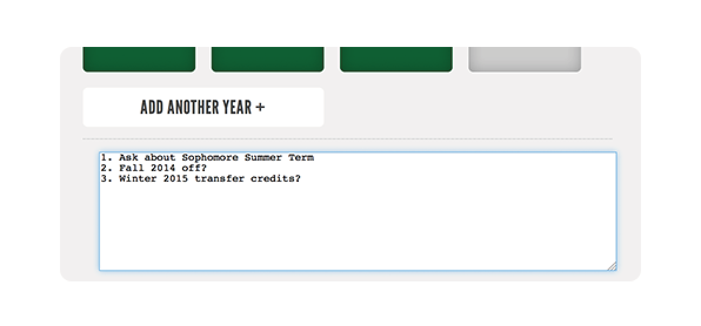
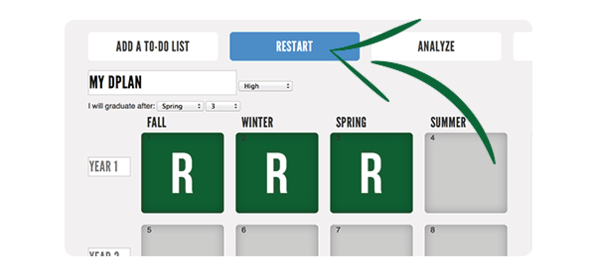
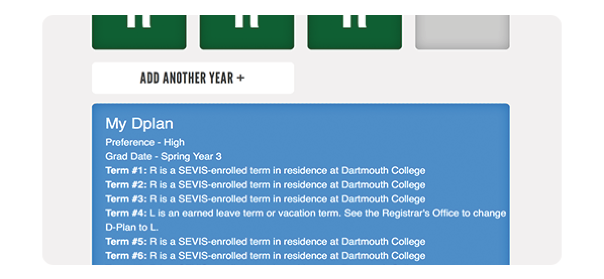
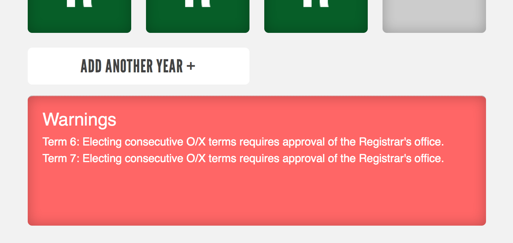
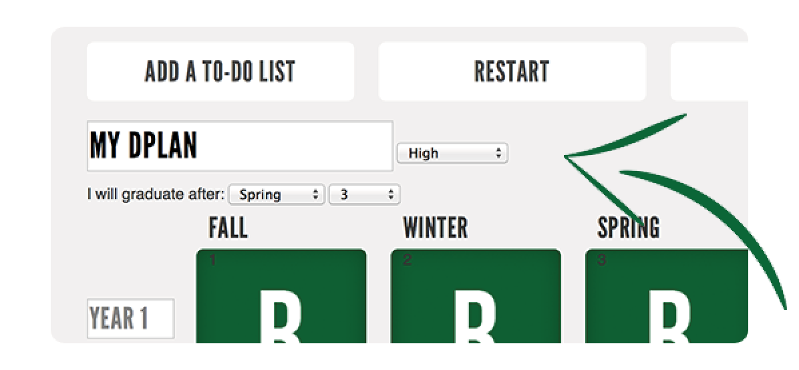
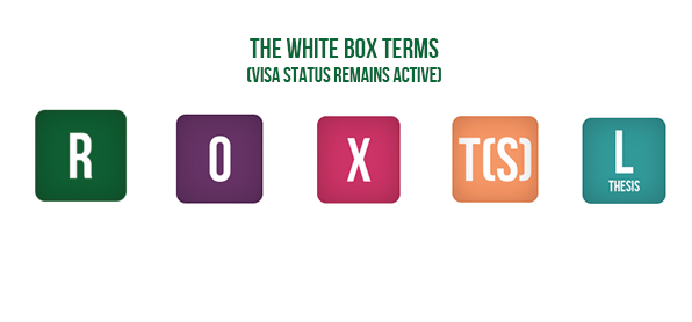
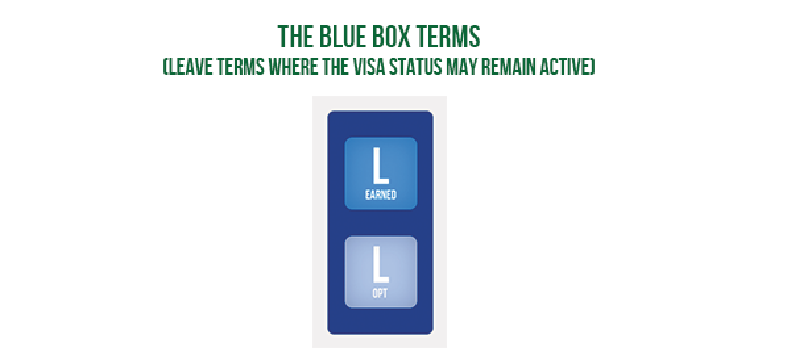
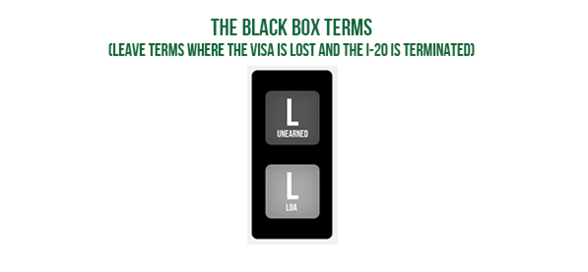
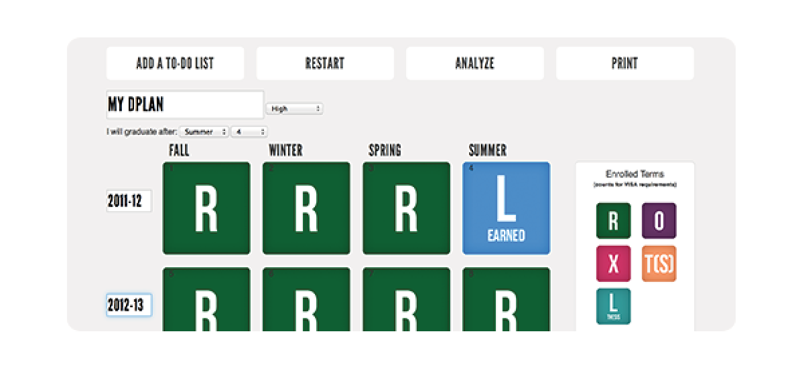
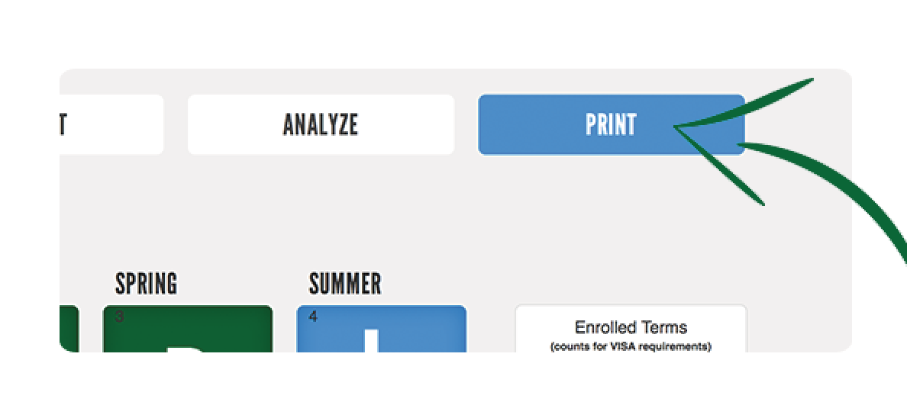

Part 1 - Planning Tools

click the Add A To-Do List box and a free-form text box appears at the
bottom of the screen
Part 1 - Planning Tools

click the Restart button to clear out your grid and start over.
Part 1 - Planning Tools

click the Analysis button and an analysis of your DPlan will appear at
the bottom of the screen.
Part 1 - Planning Tools

The D-Planner will tell you when a selection could affect your Visa.
However, you need to understand the consequences of your choices. The D-Planner will
keep track of warnings in the warnings box underneath the grid. Feel free to play around, and the
D-Planner will let you know what extra steps you may need to take!
Part 2 - The Grid

Enter a Title, Preference, and expected Term of graduation
Part 3 - The Terms

R: you are enrolled and studying on the Dartmouth College campus
O: you are enrolled and studying on an LSA or FSP through Dartmouth
College
X: you are enrolled and studying on an official exchange program
through Dartmouth College
T(S): you are enrolled and studying on an independent transfer term
at a college approved by Dartmouth for credit, and approved by OVIS for SEVIS status
Part 3 - The Terms

L(Earned): Off-term taken only following 3 terms of R, O, or X. You
may stay in the U.S. or leave but cannot work anywhere in the U.S. except for a Dartmouth College
paycheck
L(OPT): you have requested OPT and may work in the U.S. in their
field of study
L-DI CPT: Available to students with a
declared major. The divisional internship must occur during a
student's earned leave term. Enrollment in the DI course will take
place during the R/O/X term immediately following the leave term
Part 3 - The Terms

L(Unearned): Off-term taken following less than 3 terms of R, O, or
X.
L(LoA): A term of Leave of Absence. I-20 will be terminated, visa
status is lost, but you will take an R term in the next term and will request reactivation of your
I-20
Part 4 - Drag and Drop!

To move items from the boxes onto the grid, just drag and drop - it's that simple.
Part 5 - Explore!

Don't be afraid to explore and try new things!
Get Started
Part 6 - Print and Discuss with Ovis

When you have a DPlan you would like to save, use the print function or take a screen
shot of your grid to bring in for discussion with OVIS.
Get Started